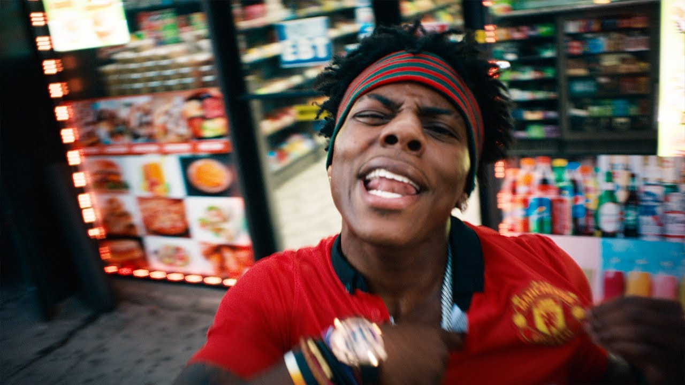
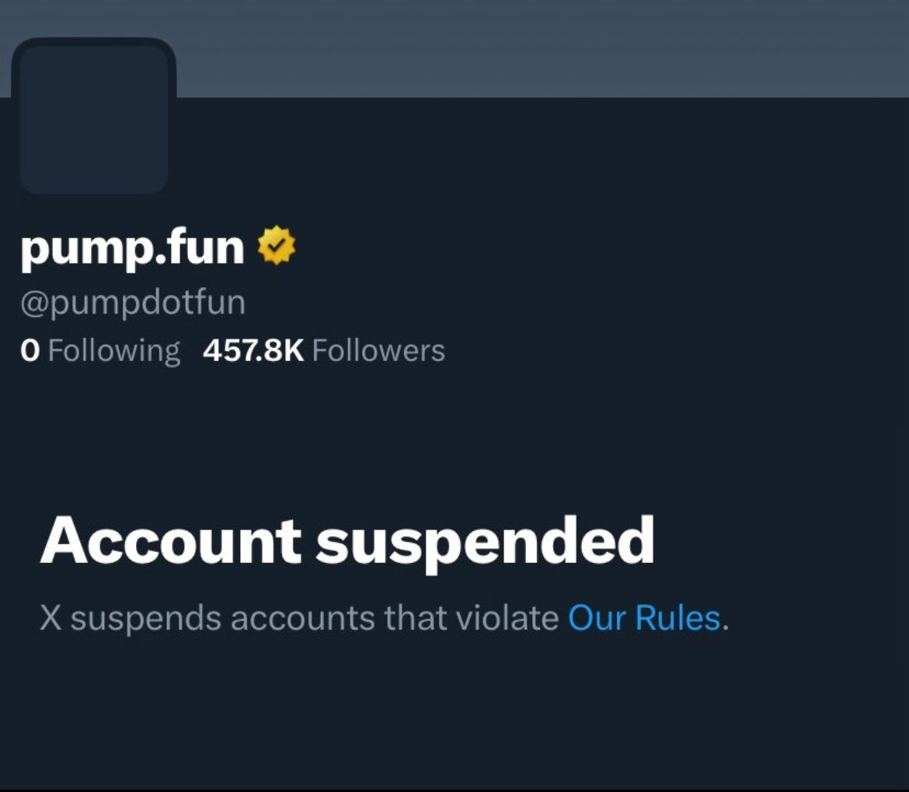

LIVE
Just now
BREAKING: Pump.fun's $PUMP Token Launch Delayed Until June 30th Amid Alon Cohen's Headquarters Being Nuked
The highly anticipated $1B token sale faces unexpected delays as Pump.fun's headquarters experiences disruption from ongoing regional conflicts. Co-founder Alon Cohen's status currently unknown.
2 MIN READ
LIVE
2 MIN READ
BREAKING: Kai Cenat and IShowSpeed Refuse to End Stream Until They Beat Super Mario Bros.
The streaming duo has been live for 47 hours straight, surviving on energy drinks and pure determination as they repeatedly fail at World 8-4. Viewers are placing bets on whether they'll beat Bowser or die of exhaustion first.
2 MIN READ
BREAKING: LexaproTrader's Eye Stolen By Disgruntled Trader After Thread Exposed As Insider Shill
The prolific X analyst, known for his extensive "alpha" threads, lost his eye in what investigators are calling "the most degenerate case of revenge trading" they've ever seen.
10 MIN READ
IShowSpeed Releases New Song "Fight to Win", Fans Speculate About Subliminal Lyrics Related to Having Gay Sex With Kai Cenat
The YouTube sensation's latest track has fans theorizing about secret signals to his streaming rival-turned-possible love interest. "The tension in their streams was always there," claims body language expert.

1 MIN READ
BREAKING: Marlon OUTED for wearing veneers by his older brother, Marlon claps back with twerk video
The Swedish-born Twitch streamer's perfect smile exposed as artificial by brother Cozmo, responds with unprecedented Just Chatting stream featuring questionable dance moves.
LIVE
2 MIN READ
BREAKING: Orcas Start Wearing Dead Salmon Hats Again After Ditching The Trend For 37 Years
In what marine biologists are calling "the most unexpected fashion comeback since cargo shorts," Pacific Northwest orcas have revived their 1980s trend of wearing deceased fish as headwear.
2 MIN READ
Gambling and Gooning Linked to Global Life Quality Improvement?
A controversial study from an unconventional research group suggests that combining high-stakes gambling with extended gooning sessions may lead to unprecedented improvements in personal satisfaction, despite concerns from traditional mental health experts. "We're just as surprised as anyone," admits lead researcher Dr. Ansem.
1 MIN READ
BREAKING: Pump.fun's Official X Account Gets Suspended After Mass Reports of "Suspicious Activity"
The Solana-based meme coin generator's social media presence vanishes amid ongoing controversy, leaving thousands of degens in shambles.

2 MIN READ
Was Kai Cenat Actually Shot By Drake? A Deep Dive Into What Exactly Happened
Social media erupts in chaos as fans speculate about Drake's involvement in latest Kai Cenat swatting incident, despite zero evidence connecting the two events or Drake even being awake at the time.